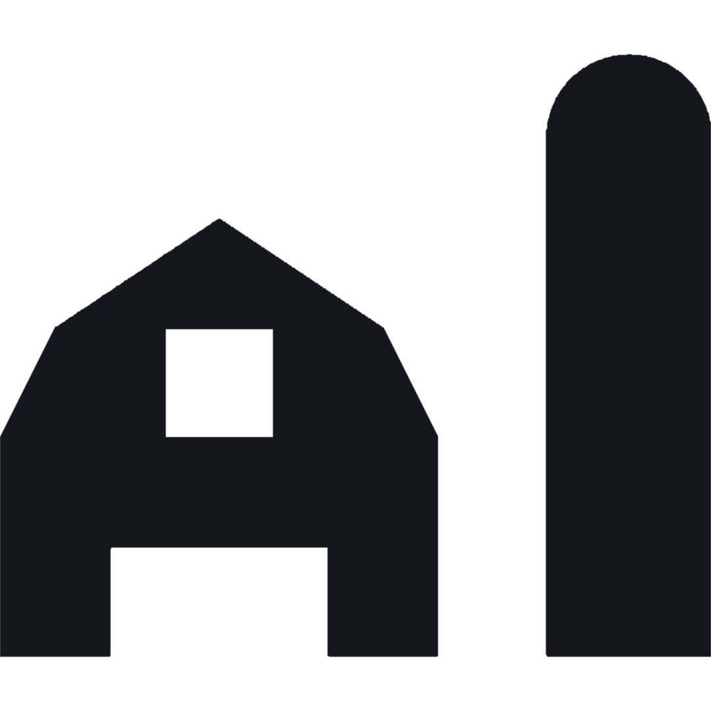
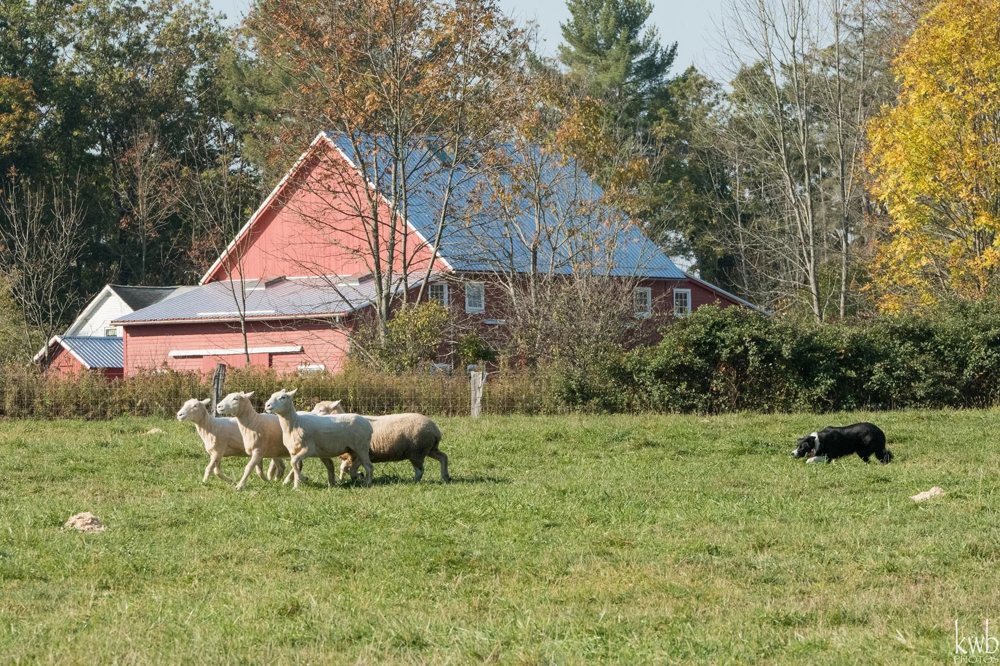
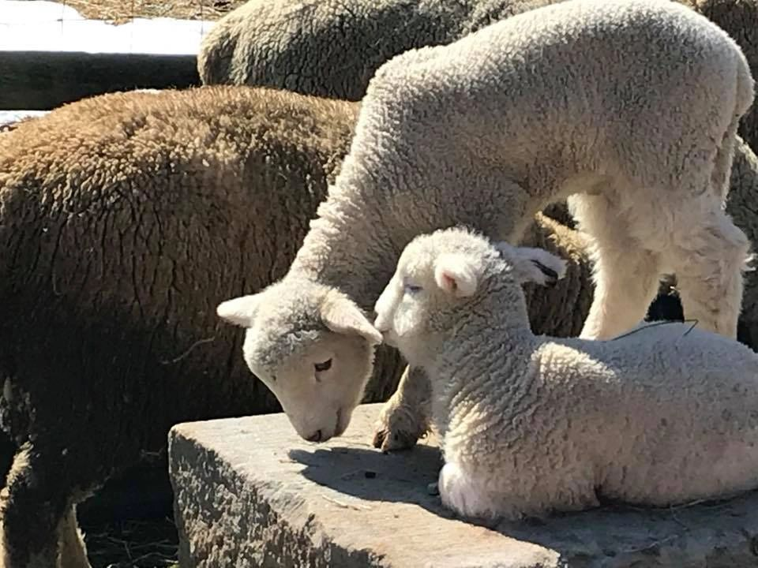
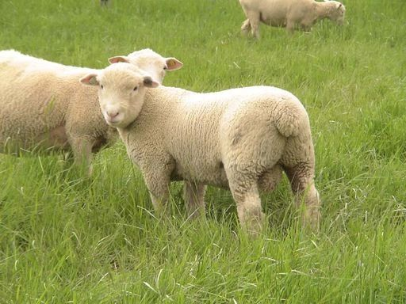
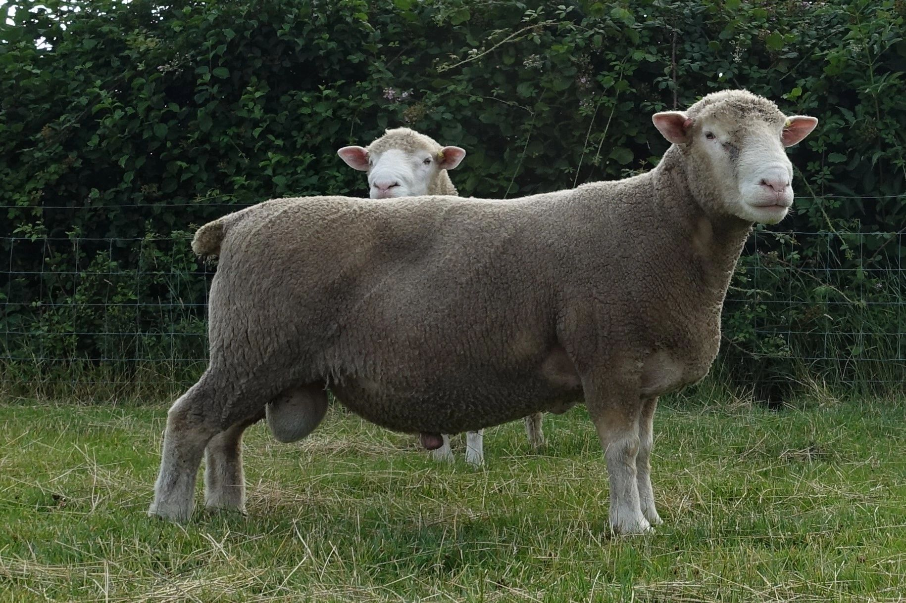
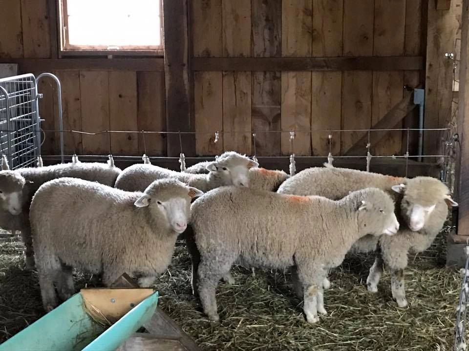

Programming
Farm-to-table dinners, cooking demos, workshops, and seasonal festivals connect guests to local food and craft.
See the 2026 schedule.

The Spicy Lamb FarmCuyahoga Valley National Park
The Spicy Lamb Farm raises production Dorset sheep, Rouen duck, orchard fruits, bees, herbs, and flowers—sharing the abundance of our CVNP hillside with events, memberships, and farm-to-table experiences.

Located on 12 acres in the heart of Cuyahoga Valley National Park—with additional pastures at Camp Ledgewood—the farm is home to seed-stock Dorsets, free-range ducks, orchard fruit, bees, and specialty crops. We welcome visitors for scheduled events, classes, and tours.
Farm-to-table dinners, cooking demos, workshops, and seasonal festivals connect guests to local food and craft.
See the 2026 schedule.
6560 Akron Peninsula Road, Peninsula, OH 44264. Reach us via Buckeye and Valley Bridle Trails or Dugway Hill.
Family-friendly, welcoming, and by appointment—please schedule visits and respect animals and guests.
Zero-tolerance for aggressive behavior.



